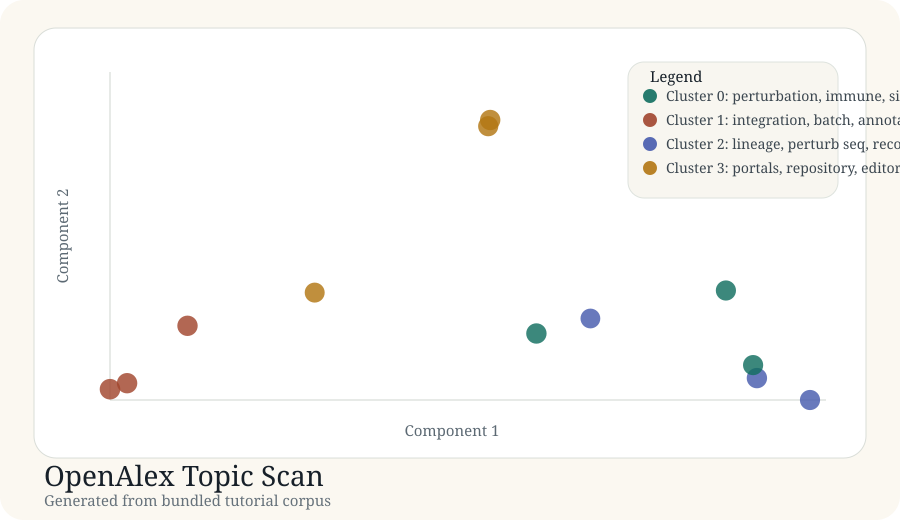

Tutorial article
OpenAlex Topic Scan
This article documents a real generated tutorial run from the bundled corpus in docs/tutorial-data/openalex-topic-scan.csv.
Background
A topic scan is different from a narrowly curated review corpus. It asks whether a mapping workflow can separate broad technical islands in a methods-heavy literature set without hand-curated tags.
Purpose
The goal here is to check whether a small OpenAlex-style topic corpus separates perturbation-screen methods, atlas integration work, lineage tracing, and portal/editorial material.
Data used
Source file: openalex-topic-scan.csv. The corpus contains 12 records intended to mimic a recent methods scan.
| Record | Title | Year |
|---|---|---|
| openalex-001 | Perturbation screens for single-cell causal inference | 2024 |
| openalex-004 | Benchmarking multimodal integration in single-cell atlases | 2024 |
| openalex-007 | Lineage tracing under pooled perturbations | 2022 |
| openalex-010 | Data portal editorial for single-cell resources | 2021 |
Code used
The same deterministic generator is used here. The essential stage is the same: build a lexical representation, reduce it, cluster it, and save the artifacts.
records = load_records(DATA_DIR / "openalex-topic-scan.csv") vocab, vectors, _ = build_tfidf(records) centered, _ = center_vectors(vectors) coords = project(centered, top_components(centered, 2)) labels, centroids = kmeans(vectors, 4)
Result figure

Results
| Cluster | Theme | Size | Mean probability |
|---|---|---|---|
| 0 | perturbation, immune, signaling | 3 | 0.83 |
| 1 | integration, batch, annotation | 3 | 0.84 |
| 2 | lineage, perturb seq, recording | 3 | 0.81 |
| 3 | portals, repository, editorial | 3 | 0.82 |
Generated artifacts
Interpretation
This corpus separates into four clean islands with balanced cluster sizes, which is what you would hope for in a tutorial designed to communicate topic discovery. The portal/editorial cluster is particularly useful as a reminder that not all retrieved records belong to the same methodological layer.